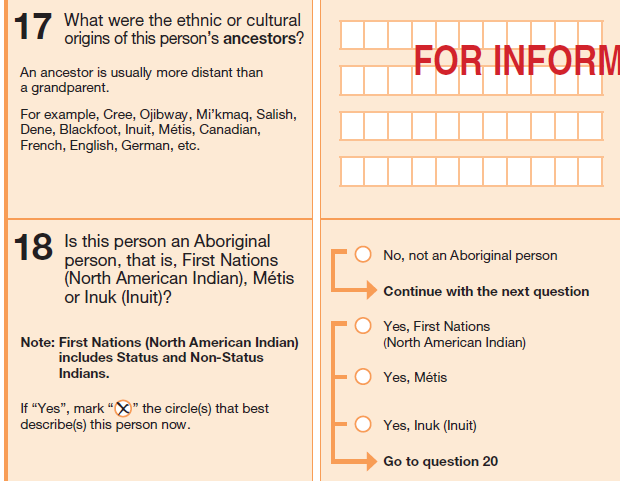

Finding the data:
Indigenous peoples
Jeremy Buhler, Data Librarian, UBC Library
jeremy.buhler@ubc.ca
April 28, 2021
- Find data and reports from Statistics Canada
- Understand limitations of Statistics Canada data
- Access public use microdata files (PUMFs)
Some reasons to use Statistics Canada
- National coverage (Census and surveys)
- Purpose, method, and data well documented
- Coverage for many topics
- Public Use Microdata Files (PUMFs) often available
Access to data
- Statistics Canada website (freely available)
https://www.statcan.gc.ca - Nesstar (browse surveys and variables)
https://resources.library.ubc.ca/page.php?id=2392 - Abacus data repository (freely available PUMFs)
https://abacus.library.ubc.ca - Research Data Centres (researchers apply for access)
https://www.statcan.gc.ca/microdata/data-centres
 https://statcan.gc.ca
https://statcan.gc.ca
- before 1986: Native Indian
- 1986-2016: Aboriginal
- 2021: Indigenous
- Indigenous replaces Aboriginal
- New questions
- Métis organization or Settlement
- Inuit land claims agreement
- Community Well-Being Index
- Surveys on Indigenous peoples
- Some variables suppressed
- Some variables aggregated
- May only be a sample of responses
- Nesstar
browse surveys and variables, CWL required - Abacus data repository
search/download PUMFs, public access
Census Program
A statistical portrait of the country every 5 years
Changes in the 2021 Census
See https://www12.statcan.gc.ca/census-recensement/2021/ref/98-20-0001/982000012020003-eng.cfm for more information
Importance of documentation
Census web pages and PUMF user guides alert researchers to potential gaps and limitations
"Users should be aware that the estimates associated with this variable are more affected than most by the incomplete enumeration of certain Indian reserves and Indian settlements in the Census of population"
From 2016 Census Public Use Microdata File (PUMF): Documentation and user guide (downloaded from https://hdl.handle.net/11272.1/AB2/GDJRT8)

Excerpt of table from https://www12.statcan.gc.ca/census-recensement/2016/ref/98-304/app-ann1-2-eng.cfm
Indigenous Services Canada
https://www.sac-isc.gc.ca/eng/1100100016570/1604594851787 for more information
Public Use Microdata Files (PUMFs)
Public data modified to protect respondent privacy